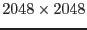
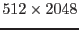

The SAS task omcomb is called by omgchain when the current ODF contains files obtained in the Engineering-2 (full frame, low resolution) mode of OM. In this mode the data from the OSW is split into four sub-windows. For instance, the -pixel image can be placed in four image files, each containing a vertical -pixel strip. Combining the Engineering-2 files into one image is the default option, which, if desired, can be switched off.